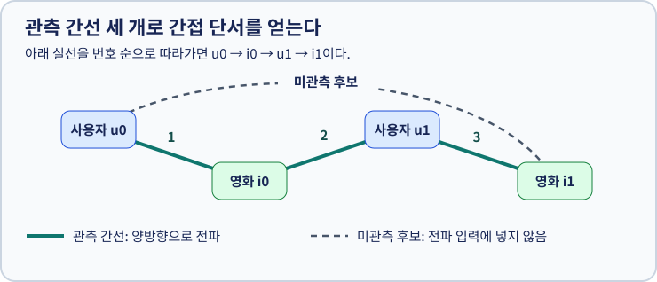
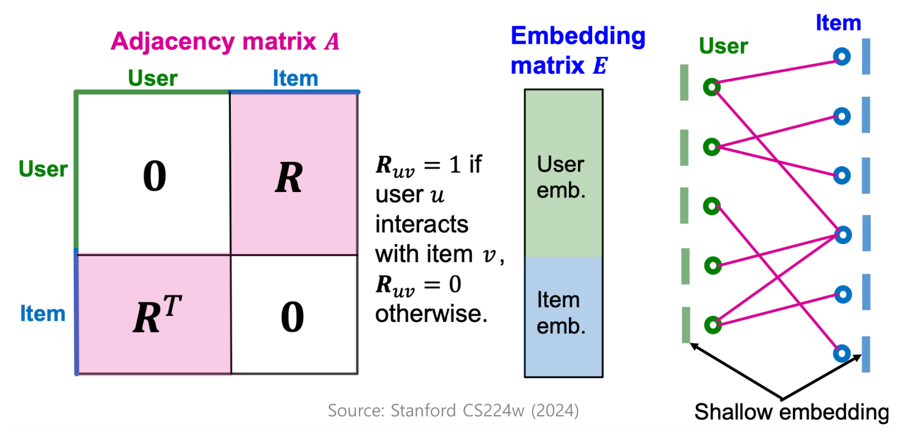
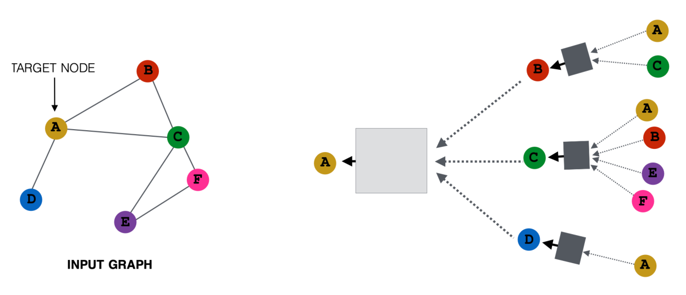

6. 그래프 기반 추천
학습 안내 · 이전: 개인화 추천 시스템 · 다음: 추천 평가
같은 영화를 본 사용자의 다른 영화 기록은 개인화 추천의 간접 단서다. 그래프 기반 추천(Graph-based Recommendation)은 사용자·항목과 그 관계를 그래프로 나타내 추천에 활용한다. 그중 이 장의 그래프 신경망 방식은 이웃의 정보를 받아 사용자와 항목의 임베딩을 바꾸는 과정으로 협업 신호를 학습한다. 그래프를 사용하는 모든 추천 방법이 반드시 신경망인 것은 아니다.
앞 장에서 배운 효용 행렬의 관측 기록을 연결로 옮긴 뒤, 한 층의 메시지 전달을 이해하고, 여러 층의 결과를 개인화 점수와 순위 학습에 연결한다. 교안을 따로 열지 않아도 본문의 그림과 예제로 따라갈 수 있다.
| 학습 단계 | 중심 질문 | 교안의 관련 위치 |
|---|---|---|
| 그래프와 추천 과제 | 무엇을 노드·간선으로 만들고 어떤 연결을 예측하는가? | p.3–13 |
| 한 층의 계산 | 이웃 정보와 자기 정보를 어떻게 모으는가? | p.17–26 |
| 층을 쌓는 효과 | 연결 수와 전달 거리를 어떻게 다루는가? | p.21, 27–28 |
| NGCF | 그래프 전파가 기존 협업 필터링을 어떻게 확장하는가? | p.30–36 |
1. 상호작용 행렬을 이분 그래프로 바꾼다
1.1 방향의 유무와 노드 종류를 구분한다
그래프(Graph)는 대상을 나타내는 점인 노드(Node)와 관계를 나타내는 선인 간선(Edge)으로 구성된다. 영화 추천에서는 사용자와 영화가 노드이고, 시청·클릭·구매 같은 기록이 간선이 될 수 있다. 인접행렬(Adjacency Matrix)은 어떤 노드끼리 연결되어 있는지를 표로 나타낸 것이다.
| 구분 | 관계의 의미 | 추천과 연결해 읽기 |
|---|---|---|
| 무방향 그래프(Undirected Graphs) | A–B 연결을 양쪽에서 같은 관계로 참조 | 사용자–영화의 상호작용을 양방향 정보 전달에 활용 |
| 방향 그래프(Directed Graphs) | A→B와 B→A가 서로 다른 관계 | 사용자 A가 B를 팔로우해도 B가 A를 팔로우한다는 뜻은 아님 |
| 이분 그래프(Bipartite Graph) | 노드를 두 집합으로 나누고 서로 다른 집합 사이에만 연결 | 사용자 집합과 항목 집합 사이에 상호작용 간선 배치 |
방향의 유무와 이분 여부는 서로 다른 기준이다. 이분 그래프도 방향을 가질 수 있지만, 이 장은 무방향 사용자–항목 이분 그래프를 사용한다. 사용자가 영화를 봤다는 행동을 양방향으로 계산한다는 것이 영화가 사용자를 봤다는 뜻은 아니다. 같은 관측 관계를 사용자와 항목의 표현 갱신에 모두 활용하는 모델링 선택이다.
무방향 인접행렬에서는 A에서 B로 연결되어 있으면 B에서 A로도 같은 값을 표시하므로 대칭이다. 방향 그래프에서는 두 값이 달라도 된다. 교안 p.7의 구분을 먼저 확인한 뒤 아래 예를 읽자.
1.2 효용 행렬의 관측 칸을 간선으로 옮긴다
교육용 관측 간선은 u0–i0, u1–i0, u1–i1 세 개다. u는 사용자, i는 항목인 영화다. 가능한 간선은 사용자와 항목 사이뿐이므로 이분 그래프다. 노드 순서를 u0,u1,i0,i1로 정하면 다음처럼 된다.
u0 u1 i0 i1
A = u0 [ 0 0 1 0 ]
u1 [ 0 0 1 1 ]
i0 [ 1 1 0 0 ]
i1 [ 0 1 0 0 ]
R (사용자 × 항목) = [[1,0], [1,1]]
같은 종류끼리 만나는 두 블록은 전부 0이다.


실선을 1→2→3으로 따라간 u0 → i0 → u1 → i1은 3-hop 경로다. u0–i1 점선은 입력에서 없는 간선이며 추천 후보가 될 수 있다. 단, 경로가 있다는 사실만으로 사용자가 반드시 좋아한다고 단정하지 않는다. 보유 로그의 타임스탬프와 노출 조건도 별도로 살핀다.

왼쪽의 두 0 블록은 같은 종류의 노드끼리 간선이 없음을 뜻한다. 가운데 임베딩 표는 인접행렬과 달리 노드마다 학습할 값이 한 행씩 있다. 오른쪽 그래프의 선이 연결을, 노드 옆 막대가 벡터를 뜻한다. 그림 크게 보기 · 출처: 추천시스템 심화, 33쪽(도식 원출처: Stanford CS224W, 2024).

1.3 추천은 새로운 사용자–항목 링크를 예측한다
링크 예측(Link Prediction)은 아직 관측하지 않은 간선이 생길 가능성을 예측하는 과제다. 여기서는 훈련 시점까지의 클릭·시청 기록을 그래프로 만들고, 사용자별로 앞으로 상호작용할 항목을 높은 점수로 정렬한다. 모든 사용자에게 같은 인기 항목을 주는 것보다 그 사용자의 주변 연결에서 얻는 정보를 활용한다.
반면 노드 분류(Node Classification)는 영화의 장르나 사용자의 범주처럼 노드 자체의 라벨을 맞힌다. “이 영화는 코미디인가?”와 “이 사용자가 이 영화를 볼까?”는 정답의 단위가 다르다.
예의 u0–i1은 관측되지 않은 추천 후보지만, 실제로 싫어한다고 확인된 음성은 아니다. 아직 노출되지 않았거나 나중에 볼 수도 있다. 학습 그래프에는 훈련 간선만 넣고, 검증·평가 때 맞힐 간선은 전파에서 숨긴다. 간선 자체에 점수를 매기는 이 장의 과제를 이해하면 뒤의 순위 학습과 자연스럽게 이어진다.
2. 메시지를 만들고 이웃 순서와 무관하게 모은다
2.1 전파와 변환은 각각 무엇인가?
그래프 신경망(GNN, Graph Neural Network; 복수형 GNNs)은 그래프의 연결과 노드의 표현을 이용해 새 표현을 만드는 신경망이다. 교안의 정보를 전파하고 변환한다(Propagate and Transform Information)는 설명에는 두 역할이 있다.
- 전파(Propagate): 간선을 따라 어느 이웃의 정보를 받을지 정한다. 연결이 정보를 주고받는 경로가 된다.
- 변환(Transform): 받은 정보를 현재 층의 학습 가능한 가중치로 바꾼다. 추천에 유용한 특징의 조합을 학습하는 역할이다.
입력은 누가 연결되어 있는지를 나타내는 인접행렬과 각 노드가 현재 어떤 상태인지를 나타내는 벡터다. 벡터는 장르 같은 관측 특성이거나 학습하는 임베딩일 수 있다. 이 장의 NGCF에서는 사용자와 항목의 초기 임베딩 자체를 학습한다. 연결 표와 임베딩 표는 크기와 역할이 다르므로 같은 데이터로 보지 않는다.
예를 들어 사용자 2명·영화 2개에 각 노드의 벡터 길이가 4라면, 인접행렬은 노드 4개 사이의 연결을 담는 4×4 표이고 임베딩은 노드마다 값 4개를 담는 4×4 표다. 이 예에서는 크기가 우연히 같지만, 벡터 길이를 8로 바꾸면 임베딩만 4×8이 된다.
2.2 GNN 한 층의 입력과 출력
그래프 신경망 층(GNN Layer) 하나는 목표 노드의 이웃 벡터들을 받아 그 노드의 새 벡터 하나를 만든다. 노드마다 이웃 수는 달라도, 같은 층의 출력 벡터 길이는 모델이 정한 크기로 맞춘다. 아래 세 작업을 한 번 수행하는 것이 한 층이며, 이웃 하나를 읽을 때마다 층이 하나씩 늘어나는 것이 아니다.
| 구성 | 입력에서 출력으로 하는 일 | 추천 관점의 의미 |
|---|---|---|
| 메시지(Message) | 이웃의 이전 벡터를 변환해 전달할 벡터를 만듦 | 이웃 영화나 사용자의 어떤 정보를 받아들일지 학습 |
| 집계(Aggregation) | 여러 메시지를 합·평균·원소별 최댓값 등으로 하나로 모음 | 여러 상호작용의 단서를 하나의 표현에 반영 |
| 자기 연결(Self-Connection)과 갱신 | 자기의 이전 표현도 포함하고 필요한 활성화 함수를 적용 | 이웃의 정보만 받고 자기 정보는 잃어버리는 상황을 방지 |
메시지와 집계는 다른 작업이다. 예를 들어 메시지 변환이 값을 두 배로 만드는 규칙이라면, 이웃의 이전 값 2·4는 메시지 4·8이 된다. 이를 평균으로 집계하면 결과는 6이다. 메시지는 각 이웃에 적용하고, 집계는 만들어진 메시지들을 모아 적용한다. 실제 벡터에서는 여러 성분의 조합을 학습할 수 있고, 뒤의 NGCF처럼 받는 노드의 표현까지 메시지에 활용하기도 한다.
집계에는 이웃 순서가 결과를 바꾸지 않는 성질이 필요하다. 4·8의 평균은 순서를 바꿔도 6이다. 반면 임의의 나열 순서대로 그대로 이어 붙이면 순서에 따라 결과가 달라지고, 이웃 수가 달라질 때 길이도 달라진다. 교안 p.24의 여러 벡터를 하나로 만드는 함수라는 설명은 이런 집계 조건과 함께 읽는다.
2.3 자기 연결은 실제 시청 기록과 다르다
위 예에서 목표 노드의 자기 값이 10이고 같은 두 배 변환을 쓴다면 자기 메시지는 20이다. 이를 이웃 메시지 4·8과 함께 평균하면 약 10.67이 된다. 자기 값을 제외했을 때의 6과 다르다. 이는 메시지 변환과 평균 집계를 설명하는 별도 교육용 예이며, 다음 절의 GCN이나 NGCF 계산을 그대로 재현한 값은 아니다.
자기 연결은 자기 벡터를 계속 참고하기 위한 계산 경로다. 사용자–사용자 시청 간선을 새로 관측했다는 뜻이 아니다. 원본 상호작용 그래프의 이분 구조를 유지하면서, 계산용 인접행렬에 자기 루프(Self-loop)를 더하거나 자기 항을 따로 결합할 수 있다. 두 방식을 겹쳐 넣어 자기 정보를 의도치 않게 두 번 세지 않도록 한다. 이웃이 없는 노드의 평균은 따로 정의해야 하며, 자기 정보나 기본값을 이용하는 정책이 필요하다.
2.4 모든 노드가 같은 층을 어떻게 통과할까?
교안 p.20의 모든 노드(Every Node)는 목표 노드 하나만 갱신하는 것이 아니라 사용자와 항목 각각을 중심으로 같은 계산을 수행한다는 뜻이다. 이웃은 노드마다 다르지만, 같은 종류의 메시지 변환에는 층의 파라미터를 공유한다. 노드마다 별도의 신경망 전체를 만드는 것은 아니다.
같은 층의 모든 노드는 직전 층의 값을 읽고 새 값을 만든다. 먼저 계산한 사용자의 새 값을 같은 층의 영화 계산에 바로 넣으면, 계산 순서에 따라 정보가 더 멀리 전달되는 다른 알고리즘이 된다. 개념적으로 이전 값과 새 값을 나누어 갱신하면 여러 노드의 계산을 병렬로 조직할 수 있다. 큰 그래프에서는 일부 노드와 이웃을 묶어 처리하기도 하므로, 모든 노드를 반드시 메모리에 한꺼번에 올려야 한다는 뜻은 아니다.
2.5 GNN 층 수와 정보가 닿는 거리
일반적인 이웃 메시지 전달 방식에서는 한 층을 거칠 때 정보가 최대 한 연결만큼 이동한다. 여러 GNN 층(GNN Layers)을 쌓으면 더 멀리 있는 연결의 영향을 표현에 반영할 수 있다. 위 그림에서 u0은 한 층 뒤 i0의 정보를 받고, 두 층 뒤에는 i0를 통해 u1의 영향을 받을 수 있다. 세 층이면 i1의 정보까지 닿는다. 두 끝점의 표현을 동시에 바꾸므로 링크를 맞히려면 반드시 세 층이 필요하다는 뜻은 아니다. 계산 트리는 원래 그래프의 여러 경로를 펼쳐 보여 준다. 구현에서는 같은 노드의 표현을 재사용할 수 있다.

오른쪽의 A를 향해 바깥쪽 이웃 표현이 모인다. 같은 이름의 노드가 여러 가지에 나타날 수 있는데, 그래프에 새로운 노드가 생긴 것이 아니라 서로 다른 경로에 같은 노드가 등장한 것이다. 그림 크게 보기 · 출처: 추천시스템 심화, 19쪽.

3. 연결 수에 따라 정보의 비중을 바꾼다
그래프 합성곱 신경망(GCN, Graph Convolutional Network)은 받은 정보를 그냥 더하지 않고, 연결이 많은 노드가 지나치게 큰 영향을 주지 않도록 비중을 조정한다. 연결 수를 차수라고 한다. 여기서는 먼저 자기 자신과의 연결을 더한 뒤 차수를 센다. 한 간선에서 쓰는 비중은 양쪽 연결 수를 곱하고 제곱근을 구한 뒤, 1을 그 값으로 나눈 것이다.

예를 들어 u0에 2, i0에 3이라는 이전 값이 있고 별도 변환을 하지 않는다고 하자. u0은 자기 값의 절반인 1과 이웃에서 온 약 1.22를 더한다. 활성화 전 값은 약 2.22다. 두 값을 똑같이 평균한 2.5와 다르다. 뒤의 신경 그래프 협업 필터링(NGCF, Neural Graph Collaborative Filtering) 예는 원래 이웃 관계에서 센 양 끝 노드의 차수로 비중을 정하고 자기 정보는 따로 더한다. 두 계산에서 차수를 세는 기준을 섞지 않는다.
4. NGCF는 그래프를 임베딩 학습에 넣는다
4.1 1차 구조에서 고차 연결로 확장한다
교안 p.31의 1차 구조(First-order Structure)는 여기서 비교하는 기본 잠재 요인 모델이 사용자–항목 쌍의 직접 상호작용을 학습 대상으로 삼는다는 뜻이다. 사용자 u0과 영화 i1의 점수는 그 둘의 벡터를 꺼내 계산하며, 그 순간 u0 → i0 → u1 → i1 같은 경로를 따라 이웃을 집계하는 전파 단계는 없다.
다만 기본 행렬 분해도 여러 사용자의 기록을 함께 학습하므로 간접적인 협업 신호가 반영될 수 있다. “1차만 본다”를 “다른 사용자의 기록은 전혀 배우지 않는다”로 해석하면 안 된다. 이웃 기반 방법이나 다른 그래프 방법까지 포함한 모든 협업 필터링(CF, Collaborative Filtering)이 1차 관계만 다룬다는 주장도 아니다.
| 연결 거리 | 이 장의 예 | 추천에 제공하는 단서 |
|---|---|---|
| 1-hop | u0–i0 | 이 사용자가 실제로 상호작용한 영화 |
| 2-hop | u0–i0–u1 | 같은 영화를 본 다른 사용자 |
| 3-hop | u0–i0–u1–i1 | 그 다른 사용자가 본 추가 영화 |
NGCF는 학습 가능한 초기 임베딩에서 출발해 이런 연결을 따라 정보를 전파하고, 점수를 계산하기 전의 표현 자체에 고차 연결(High-order Connectivity)을 명시적으로 반영한다. 직접 관측되지 않은 u0–i1의 추천 가능성을 판단할 단서를 만드는 것이다.
4.2 무엇이 입력이고 무엇을 학습할까?
훈련 상호작용 R → 이분 그래프 A
사용자·항목의 초기 임베딩 → 첫 번째 이웃 집계 → 두 번째 이웃 집계
층별 벡터 결합 → 사용자·항목별 최종 벡터
사용자 벡터 · 항목 벡터 → 점수 → 베이지안 개인화 순위(BPR) 손실 → 임베딩과 층 가중치 갱신
| 구성 | 역할 | 학습 중 달라지는가? |
|---|---|---|
| 훈련 상호작용 그래프 | 정보를 전달할 이웃을 정함 | 일반적인 고정 그래프 학습에서는 간선을 학습 파라미터로 갱신하지 않음 |
| 사용자·항목의 초기 임베딩 | 각 노드의 출발 표현 | 손실의 기울기로 갱신 |
| 층별 메시지 변환 가중치 | 이웃 정보와 상호작용을 변환 | 손실의 기울기로 갱신 |
| 층별 결과와 최종 점수 | 현재 파라미터로 계산한 결과 | 파라미터가 바뀌면 다음 계산 결과도 달라짐 |
노드별 임베딩과 층에서 공유하는 가중치는 서로 다른 학습 대상이다. 순위 손실의 신호는 내적 → 최종 벡터 → 여러 전파 층 → 초기 임베딩으로 이어진다. 벡터를 그래프에 흘려 보내기만 하면 자동으로 취향이 학습되는 것은 아니며, 실제 상호작용에 맞는 손실로 파라미터를 조정해야 한다.
4.3 NGCF 메시지에는 두 노드의 상호작용도 들어간다
일반적인 이웃 변환에 더해, 원 논문의 NGCF는 보내는 영화의 벡터와 받는 사용자의 벡터를 같은 위치끼리 곱한 정보도 메시지에 사용한다. 이는 내적으로 점수 하나를 만드는 단계와 다르다. 두 벡터의 성분별 상호작용을 메시지에 담아, 같은 영화도 받는 사용자의 현재 표현에 따라 다른 정보를 보낼 수 있게 한다.
아래 그림은 벡터를 숫자 하나로 단순화하고 두 변환 가중치를 1로 둔 교육용 예다. 영화 i0의 이전 값이 3, 사용자 u0의 이전 값이 2라면 영화에서 보내는 정보는 영화 자체 값 3과 두 값의 곱 6을 합친 9다. 이를 양쪽 차수로 조정하고 자기 정보와 결합한다. 원 논문의 층별 비선형 변환을 설명하기 위해, 양수 구간에서 값이 유지되는 설정을 사용한다.

이 예는 GCN과 다른 계산을 보여 준다. 원래 그래프에서 u0의 차수는 1, i0의 차수는 2다. 두 수의 곱 2의 제곱근으로 9를 나누면 약 6.36이고, 자기 항 2를 더하면 약 8.36이다. 반대 방향인 u0→i0에서는 사용자 값 2와 곱 6을 더한 8에서 시작하므로 메시지는 약 5.66이다. 간선이 무방향이고 정규화 비중이 같아도, 두 방향의 메시지 값까지 같아야 하는 것은 아니다. 보내는 정보와 받는 노드의 표현이 다르기 때문이다.
4.4 최종 벡터를 추천 순위와 연결한다
원 논문의 NGCF는 초기 임베딩과 각 층의 결과를 이어 붙인다. 그래서 바로 옆 이웃에서 얻은 단서와 더 멀리서 온 단서를 함께 쓸 수 있다. 교안 p.36은 마지막 층의 벡터로 점수를 계산하는 일반적 설명을 제시하지만, 여기서는 원 NGCF의 층별 결합과 구분해서 읽는다. 층이 많아지면 더 먼 연결을 읽을 수 있으나 계산량이 늘고 노드들의 표현이 지나치게 비슷해질 수 있다. 층 수를 늘리는 것이 항상 좋은 추천을 뜻하지는 않는다.
전파가 끝나면 사용자와 후보 항목의 최종 벡터를 내적해 점수 하나를 얻는다. 베이지안 개인화 순위(BPR, Bayesian Personalized Ranking) 학습에서는 같은 사용자가 관측한 항목의 점수가 미관측 비교 항목보다 높아지도록 파라미터를 갱신한다. 미관측 비교 항목은 실제로 싫어한다고 확인된 항목과 다르며, 평가에서 맞힐 간선은 전파 그래프에 넣지 않는다.
정리하면, 훈련 기록으로 이웃을 정하고 → 층별로 표현을 갱신하고 → 사용자·항목 쌍의 점수를 만들고 → 원하는 순위가 되도록 학습한다. 배포 때는 같은 사용자의 후보들을 점수 순으로 정렬하며, 새 영화 추천이라면 이미 본 항목을 제외하는 정책도 적용한다. 점수 계산과 학습 흐름은 이 절에서 끝까지 읽을 수 있고, 후보·평가 지표 비교는 다음 장에서 이어진다.
근거 구분: 그래프·층별 메시지 전달·추천 문제 설정은 교안 p.3–36을 따른다. 성분별 곱을 포함한 메시지와 층별 벡터 결합은 NGCF 원 논문의 구체적인 모델 설명을 보충한 것이다. 본문 숫자는 원문 실험값이 아닌 교육용 예다.
확인 질문
- 위 그래프에서
u1–i1간선을 학습에서 빼고 그 연결을 맞히도록 평가하려면, 전파에 어떤 간선이 들어가야 하는가? - GCN에서
u1–i0의 정규화 가중치는 얼마인가? - 집계 중 이웃 벡터를 입력 순서대로 이어 붙이면 어떤 가정이 깨지는가?
- u0의 새 값을 계산한 직후 같은 층의 i0 계산에 넣어도 되는가?
- 자기 연결을 추가했다는 것은 사용자–사용자 행동 기록이 생겼다는 뜻인가?
- 기본 잠재 요인 모델과 NGCF는 점수 계산 전에 이웃을 다루는 방식이 어떻게 다른가?
해설
u0–i0, u1–i0만 전파에 사용하고u1–i1은 평가 정답으로만 둔다. 이 예에서i1은 훈련 고립 노드이므로 평가가 콜드스타트 성격을 띤다(§1, §4).- 자기 연결을 포함해 양쪽 차수가 각각 3이다. 두 수를 곱한 9의 제곱근이 3이므로 비중은 3분의 1이다(§3).
- 임의로 이웃을 나열한 순서가 바뀌면 결과가 바뀐다. 순서가 의미 없는 일반 그래프에서는 순열에 불변인 집계가 필요하다(§2).
- 이 장의 일반적인 동기식 층 계산에서는 안 된다. 모든 노드가 직전 층의 값을 읽어야 한 층당 한 연결만큼의 전달 의미를 유지한다(§2.4).
- 아니다. 자기 표현을 갱신에 포함하는 계산 경로다. 관측 상호작용의 이분 구조와 계산용 자기 연결을 구분한다(§2.3).
- 기본 모델은 학습된 두 벡터를 바로 점수 계산에 쓰고, NGCF는 그래프 이웃의 정보를 전파해 벡터를 바꾼 뒤 점수를 계산한다. 기본 모델도 전체 기록에서 간접 협업 신호를 학습할 수 있으므로 그 차이는 명시적 전파의 유무다(§4.1–4.4).